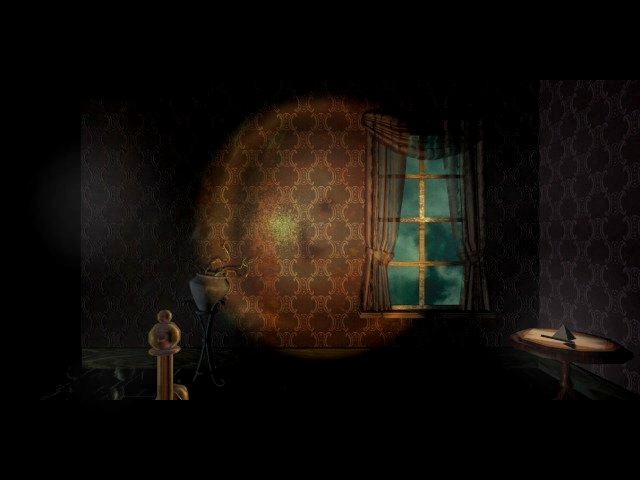
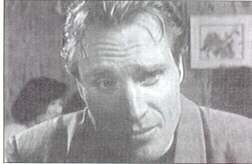
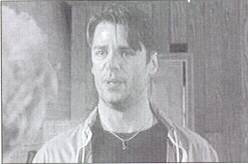

"So, do you think you have a role for me in your new play?"
This is the complete 11'th hour script. I didn't write it myself, but I found it on the net. Daniel Nolan did a very good job. I added the pictures. Enjoy if you don't mind spoilers.part one:
Henry Stauf Robert
Hirschboeck (see the attic) Robin Morales Suzy Joachim (played in an episode of 'the Commish')
Robin Morales Suzy Joachim (played in an episode of 'the Commish') Carl Denning Doug O'Keefe (played in an episode of 'Nikita:femme fatale') Samantha Ford Frances King  Chuck Lynch Mark Padgett Eileen Wiley Holly Weber Marie Wiley Michelle Gaudreau |